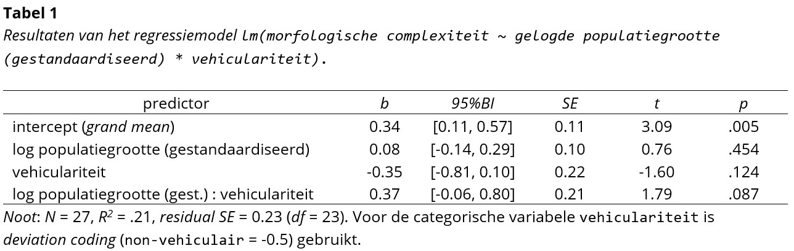
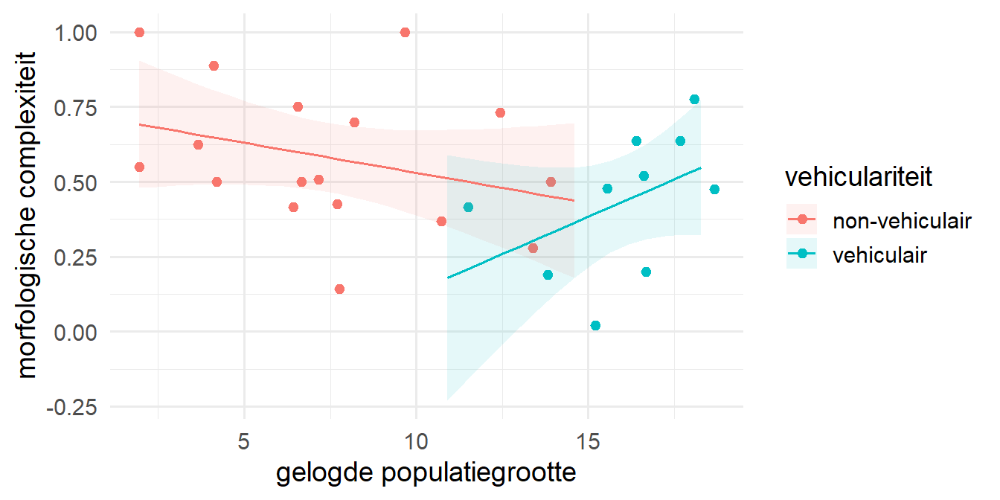

Je hebt je data-analyse uitgevoerd en daarvoor een werkend en goed gestructureerd R-script geschreven. Nu is het tijd om je analyse te gaan rapporteren in een onderzoeksverslag. Niet alles uit je script heeft daar een plek. Wat neem je nu wel op en wat niet? En hoe geef je de resultaten precies weer? Dit document geeft je hier een aantal handvatten voor. Het is gebaseerd op wat gangbaar is in de taalwetenschappelijke praktijk (zie bijv. Sonderegger, 2023) en op de richtlijnen van de APA. Binnen de opleiding Taalwetenschap verwachten we dat je de richtlijnen in dit document volgt voor elk onderzoeksverslag dat je inlevert. N.B. wanneer er een conflict bestaat tussen de richtlijnen in dit document en die van de APA, dan is dit document leidend.
Opmerking
Dit document beschrijft de situatie voor een standaard lineair model (met een numerieke outcome variabele). Mochten er voor voor andere vormen van regressie (logistische regressie, mixed models) nog aanvullende richtlijnen zijn, dan worden die in een aparte sectie beschreven.
1 Uitgangspunten bij het rapporteren
We gaan uit van drie algemene richtlijnen bij het rapporten van je statistische analyses:
volledige rapportage: je geeft inzicht in alle relevante uitgevoerde analyses, ook als deze niets of een onverwacht of ongehoopt resultaat opleverden. Je houdt dus geen informatie achter.
transparantie: je presenteert je resultaten op de inzichtelijkste manier. Je maakt het de lezer dus zo makkelijk mogelijk om je resultaten te doorgronden.
reproduceerbaarheid: je zorgt dat de gerapporteerde resultaten direct te herleiden zijn op basis van je script. Er mogen dus geen discrepanties bestaan tussen de resultaten in je rapportage en in je script (behoudens afronding). Je script en noodzakelijke databestanden voeg je toe als bijlage bij je verslag.
2 Voorbeeldoutput
Om de richtlijnen zo concreet mogelijk te kunnen maken, gebruiken we een voorbeeldonderzoek. In dit onderzoek is geprobeerd om voor een dataset van 27 talen de morfologische complexiteit van een taal te voorspellen op basis van het totaal aantal sprekers van de taal (population_size), de vehiculariteit van de taal (in hoeverre er L2-sprekers zijn) en de interactie tussen beide. Voor de variabele population_size is gebruik gemaakt van een logaritmische transformatie. Vervolgens is de variabele gestandaardiseerd voor opname in het model. De categorische variabele vehicularity heeft twee levels: talen met weinig L2-sprekers (non_vehicular) en talen met veel L2-sprekers (vehicular). Voor deze variabele is deviation coding gebruikt.
# transformeren en standaardiseren van variabelecomplexity_sample <- complexity_sample %>%mutate(log_population_size =log(population_size +1),log_population_size_z = (log_population_size -mean(log_population_size))/sd(log_population_size))# deviation coding voor variabele instellencontrasts(complexity_sample$vehicularity) <-c(-0.5, 0.5)contrasts(complexity_sample$vehicularity)
[,1]
non_vehicular -0.5
vehicular 0.5
# draaien van het lineair modelcomplexity_model <-lm(morphological_complexity ~ log_population_size_z * vehicularity, data = complexity_sample)
De informatie uit je statistische analyse moet op de juiste plek en manier worden opgenomen in je verslag. Het rechtstreeks knippen en plakken van R-code of R-output voldoet hierbij niet. Je zult de output moeten vormgeven volgens de richtlijnen en passend binnen de lay-out van je verslag.
3.1 Methode
In de methodesectie voeg je aan het eind een kopje statistische analyse toe waarin je duidelijk maakt welke statistische analyse je hebt uitgevoerd en hoe je dat precies hebt aangepakt. Net als de rest van de methodesectie schrijf je dit in een verleden tijd (OVT of VTT), aangezien de analyses al hebben plaatsgevonden.
naamgeving variabelen
Gebruik in je rapportage consistente en betekenisvolle namen voor variabelen. In je script zul je vaak voor de werkbaarheid (enigszins) verkorte namen opnemen. Een naam als log_pop_size_z is voor de lezer van je onderzoeksverslag alleen niet zo inzichtelijk. Het is dan beter om volledige namen te gebruiken zoals gelogde populatiegrootte (gestandaardiseerd). Om de relatie met je script te behouden voeg je in zo’n geval in je script in een toelichting toe waarin je aangeeft hoe je de variabelen in je verslag noemt. Op die manier is het volledig naspeurbaar voor de lezer. Let op dat je aangepaste namen ook gebruikt in figuren en tabellen. Hiervoor moet je mogelijk je R-code aanpassen. Gebruik in de lopende tekst van je verslag cursief of small caps om de namen van variabelen weer te geven.
In de sectie statistische analyse neem je in ieder geval de volgende punten op:
Welk statistisch model je hebt gebruikt (bijv. lineair model, generalized linear mixed effect model):
In de meeste gevallen zul je een onderzoek rapporteren met bepaalde verwachtingen (voorspellingen). In dat geval formuleer je dit als de reden voor het opstellen van het model. De specifieke formulering hangt hierbij natuurlijk of van de vorm van de voorspellingen. Hieronder vind je twee voorbeeldformuleringen (maar andere manieren zijn ook mogelijk mede afhankelijk van het soort onderzoek dat je rapporteert en eventuele bijbehorende hypothesen):
Voorbeeld A (algemener): “Om te onderzoeken of de morfologische complexiteit van een taal samenhangt met de populatiegrootte en de vehiculariteit van de taal, is er een lineair regressiemodel opgesteld waarin de morfologische complexiteit van een taal werd voorspeld op basis van de gelogde populatiegrootte en de vehiculariteit en hun interactie.”
Voorbeeld B (meer gericht): “Om te onderzoeken of de morfologische complexiteit van een taal inderdaad afneemt met toenemende populatiegrootte en bij talen die ook als tweede taal worden gebruikt (vehiculariteit), is er een lineair regressiemodel opgesteld waarin de morfologische complexiteit van een taal werd voorspeld op basis van de gelogde populatiegrootte en de vehiculariteit en hun interactie.”
Op welke datapunten de analyse is uitgevoerd:
Vaak zal er iets van opschoning van de data plaatsvinden (bijv. participanten die de taak niet goed hebben uitgevoerd, of ontbrekende waarden op bepaalde variabelen). Dit bespreek je meestal al eerder in de methodesectie. Het is belangrijk bij het beschrijven van je analyse aan te geven op welke data de analyse is uitgevoerd.
Voorbeeld A: “De analyse is uitgevoerd op de volledige dataset van 27 talen.”
Voorbeeld B: “Na verwijdering van de data van 3 participanten is de analyse uitgevoerd op de data van de overgebleven 48 participanten.”
Hoe variabelen zijn opgenomen in het model:
Eventuele transformaties van variabelen geef je hier aan
Voorbeeld: “de variabele gelogde populatiegrootte is gestandaardiseerd voor opname in het model”
Bij categorische predictoren rapporteer je de soort contrastcodering die is gebruikt. Geef hierbij ook aan welke numerieke waarde de levels van de variabele hebben gekregen.
Voorbeeld: “voor de variabele vehiculariteit is deviation coding gebruikt (non-vehiculair = -0.5, vehiculair = 0.5)”
Welke software is gebruikt om de analyse uit te voeren:
Hier rapporteer je in ieder geval de versie van R die is gebruikt:
Voorbeeld: “De analyses zijn uitgevoerd met behulp van het softwarepakket R(R Core Team, 2024, versie 4.6.0).”
De citatie van R vind je door in de console het commando citation() te gebruiken.
De gebruikte versie van R vind je door in de console het commando version te gebruiken.
Daarnaast citeer je de gebruikte packages, indien je niet-standaard packages hebt gebruikt (anders dan base R en tidyverse)
Voorbeeld: “Om meervoudige vergelijkingen uit te voeren is gebruikgemaakt van het package emmeans(Lenth, 2024).”
De citatie van een package vind je door in de console het commando citation() te gebruiken met tussen haakjes de naam van het package, dus bijv. citation("emmeans").
De precieze modelformule die is gebruikt:
Gebruik hiervoor het lm()-commando uit je script, maar haal de verwijzing naar de dataset eruit en pas variabelenamen aan, aan de namen die je in je verslag gebruikt. Gebruik het lettertype Consolas of een ander textwriter/monospace font om de formule weer te geven.
Voorbeeld: “De regressieanalyse is uitgevoerd met de volgende modelformule: lm(morphologische complexiteit ~ gelogde populatiegrootte (gestandaardiseerd) * vehiculariteit).”
Het gebruikte significantieniveau \(\alpha\):
In de Taalwetenschap wordt doorgaans een \(\alpha\) van .05 gehanteerd
Voorbeeld: “Voor het vaststellen van statistische significantie is een significantieniveau gehanteerd van \(\alpha\) = .05.”
Hoe de assumpties zijn gecontroleerd:
Je noemt in de methodesectie dat je de assumpties hebt gecontroleerd. Hierbij is het niet nodig om de grafieken uit je script op te nemen.
Voorbeeld: “De assumpties van het model zijn gecontroleerd door middel van visuele inspectie van de residuals.”
Voeg ook toe of er uit de controle bijzonderheden zijn gekomen
Voorbeeld bij geen bijzonderheden: “Hieruit kwamen geen bijzonderheden naar voren.”
Voorbeeld bij afwijkingen, benoem dit en bespreek het verder in de resultaten onder een apart kopje modelevaluatie: “Hieruit bleek dat de assumptie van homogene variantie mogelijk geschonden is. De implicaties hiervan worden verder besproken in de resultatensectie (zie modelevaluatie).”
Een verwijzing naar je analysescript:
Zoals gezegd komt niet alles uit je script in je verslag terug. Voor alle details kan de lezer het script raadplegen.
Voorbeeld: “De volledig uitgevoerde analyses zijn terug te vinden in het analysescript (zie Appendix A).”
Meerdere analyses gedaan?
Wanneer je meerdere analyses hebt uitgevoerd, bijvoorbeeld wanneer er meerdere afhankelijke variabelen zijn in je onderzoek waarbij je voor iedere variabele een aparte regressieanalyse hebt gedaan, neem je niet een dubbele volledige sectie op in je methode. Probeer zaken zo efficiënt mogelijk te rapporteren en richt je vooral op die zaken waarin de analyses verschillen.
3.2 Resultaten
In de resultatensectie rapporteer je de output van iedere uitgevoerde regressieanalyse en geef je een interpretatie van de relevante effecten.
3.2.1 Het weergeven van getallen
Er valt veel te zeggen over hoe getallen moeten worden weergegeven. We beperken ons tot de volgende drie richtlijnen:
Hoewel we in het Nederlands officieel een komma gebruiken voor decimalen (kommagetallen), kiezen we er toch voor om te werken met een punt als decimaalteken. Dit maakt het makkelijker om getallen in een opsomming te scheiden met een komma (bijv. bij het betrouwbaarheidsinterval).
Bij decimale getallen onder de 1 schrijven we alleen een 0 voor de punt als het getal in theorie boven de 1 uit zou kunnen komen. Wanneer dit niet het geval is, bijv. bij proporties, correlaties of p-waardes, schrijven we geen 0.
Om schijnprecisie te voorkomen, ronden we getallen af op maximaal 2 decimalen (na de punt), bijv. bij coëfficiënten. Dit geldt niet voor p-waardes waarbij we altijd 3 decimalen gebruiken.
Meer informatie is te vinden in dit overzicht van de APA.
3.2.2 Regressietabel
Neem voor elke regressieanalyse een regressietabel op met de relevante informatie. Deze tabel moet op zichzelf te interpreteren zijn. In Figuur 1 vind je de tabel behorend bij onze voorbeeldoutput (zie Paragraaf 2).

Figuur 1: Voorbeeldtabel in APA-stijl
Hieronder lichten we de onderdelen van de regressietabel toe: (i) de inhoud van de tabel, (ii) de inhoud van de noot bij de tabel, (iii) de inhoud van de titel van de tabel en (iv) de lay-out van de tabel.
Inhoud van de tabel
In de tabel neem je de volgende kolommen op:
naam van de predictoren
deze kolom krijgt de naam predictor;
de namen van de predictoren haal je uit term in de R-output;
je mag de naam van de predictoren aanpassen voor de leesbaarheid (zie ook Paragraaf 3.1):
gebruik consistente namen in je verslag;
zorg dat uit de naam duidelijk is of een variabele is getransformeerd en/of gestandaardiseerd, bijv. gelogde populatiegrootte (gestandaardiseerd);
bij categorische predictoren met treatment coding: zorg dat uit de naam duidelijk is om welk level het gaat, bijv. vehiculariteit = vehiculair;
bij het intercept: zorg bij treatment coding van categorische predictoren dat duidelijk is welk level in het intercept zit, bijv. intercept (vehiculariteit = non-vehiculair). Zorg ook dat dit het level is dat je als referentie wilt gebruiken. Herstructureer je script als dit niet overeenkomt.
de waarde van de coëfficiënt
geef deze kolom de naam b (Latijnse b), let erop dat het symbool schuingedrukt is;
de waardes haal je uit estimate in de R-output.
het 95% betrouwbaarheidsinterval behorend bij de coëfficiënt
geef deze kolom de naam 95% BI, let erop dat het symbool schuingedrukt is;
de waardes haal je uit conf.low en conf.high in de R-output;
zet de waardes tussen rechte haken en scheid ze met een komma, dus bijv. [0.24, 0.28].
waarde van de standard error van de coëfficiënt
geef deze kolom de naam SE, let erop dat het symbool schuingedrukt is;
de waardes haal je uit std.error in de R-output.
de waarde van de toetsstatistiek
geef deze kolom de naam t, let erop dat het symbool schuingedrukt is;
de waardes haal je uit statistic in de R-output.
de p-waarde van de toetsstatistiek
geef deze kolom de naam p, let erop dat het symbool schuingedrukt is;
de waardes haal je uit p.value in de R-output;
rapporteer exacte waardes en rond af op drie decimalen, waardes onder de .001 geef je weer als < .001;
Let op: omdat p tussen 0 en 1 ligt, komt er geen 0 voor de decimale punt, dus: .031 en niet 0.031.
Noot bij de tabel
Onder de tabel voeg je in een noot algemene informatie toe over het model. Deze informatie haal je uit het model m.b.v. de functie glance().
het aantal observaties waarop het model gebaseerd is
deze variabele noem je N, let erop dat het symbool schuingedrukt is;
je haalt de waarde uit nobs in de R-output;
in ons voorbeeld: N = 27.
een maat voor goodness-of-fit van het model
deze variabele noem je R2, let erop dat het symbool schuingedrukt is;
je haalt de waarde uit r.squared in de R-output;
in ons voorbeeld: R2 = .21.
informatie over de spreiding van de residuals
deze variabele noem je residual SE, let erop dat symbool schuingedrukt is;
voeg ook de bijbehorende vrijheidsgraden (df) toe;
je haalt de waardes respectievelijk uit sigma en df.residual in de R-output;
in ons voorbeeld: residual SE = 0.23 (df = 23).
bij een model met categorische predictoren: voor elke predictor welke contrastcodering er is gebruikt
in ons voorbeeld: “Voor de predictor vehiculariteit is deviation coding (non-vehiculair = -0.5) gebruikt.”
Titel van de tabel
In de titel van de tabel voeg je nog de de gebruikte modelformule toe (identiek aan die in de methodesectie):
in ons voorbeeld: lm(morphologische complexiteit ~ gelogde populatiegrootte (gestandaardiseerd) * vehiculariteit)
Lay-out van de tabel
Aan de lay-out van de tabel worden specifieke eisen gesteld. Je kunt hierbij niet zomaar uitgaan van de standaard lay-out die je tekstverwerker (bijv. Word) hanteert. Een aantal aandachtspunten:
kleurgebruik: de tabel wordt afgebeeld zonder kleuren: zwarte tekst en lijnen op een witte achtergrond.
lettertype: gebruik hetzelfde lettertype als in de rest van je tekst.
lijnen: beperk het gebruik van lijnen. Gebruik alleen horizontale lijnen, geen verticale lijnen. In principe gebruik je alleen een lijn om de bovenste rij met namen van de kolommen te markeren (boven en onder de rij) en om de onderkant van de tabel aan te geven.
uitlijning: alle titels van kolommen worden gecentreerd; alle inhoud van kolommen wordt gecentreerd, m.u.v. de meest linkse kolom, deze wordt links uitgelijnd.
naam, titel en bijschrift: geef de tabel een naam (bijv. Tabel 1) en plaats deze dikgedrukt boven de tabel. Hieronder geef je de titel van de tabel weer in cursief (bijv. Resultaten van het regressiemodellm(morphologische complexiteit ~ log_populatiegrootte (gestandaardiseerd) * vehiculariteit)). De titel kun je eventueel laten volgen door een bijschrift.
In dit document vind je een lege voorbeeldtabel die je als uitgangspunt kunt gebruiken.
Workflow: omzetten tibble naar Word-tabel
Je kunt de gegevens van je regressieanalyse uit de tibble die de functie tidy() oplevert, handmatig kopiëren en plakken naar Word, maar dit is veel werk. In deze sectie beschrijven een manier om de data uit je regressietabel in R te exporteren naar Word waarbij de getallen ook meteen op het juiste aantal decimalen worden afgerond. Deze methode bespaart je een hoop handmatig werk en verkleint de kans op fouten in de afronding (maar zie de opmerking aan het eind!)
Deze workflow past de ordening van de kolommen en de afronding van de getallen aan in R en maakt al een kolom aan met het betrouwbaarheidsinterval tussen rechte haken. Vervolgens wordt deze informatie weggeschreven naar een Excel-bestand vanwaaruit je de getallen kunt plakken naar je tabel in Word.
Voer onderstaande code uit in R op het object met de uitkomsten van je regressiemodel (in ons voorbeeld: complexity_model). N.B. hiervoor moet het package writexl zijn geïnstalleerd.
Open het bestand regressietabel.xlsx in Excel, kopieer de relevante informatie.
Selecteer de relevante cellen in de regressietabel in je Word-bestand en plak de informatie.
Let op: zorg dat je de gerapporteerde getallen altijd nog even vergelijkt met de getallen uit je oorspronkelijke analyse om er zeker van te zijn dat er niets is misgegaan bij het omzetten.
Er zijn ook allerlei packages te vinden waarmee je de output van regressieanalyses kunt laten omzetten. Deze hebben vaak meer opties dan wij nodig hebben. Deze packages kunnen zeker ook interessant zijn voor mensen die gebruiken maken van andere tekstverwerkingssystemen, zoals bijv. \(\LaTeX\).
3.2.3 Tekst
De tekst van de resultatensectie gebruik je om duiding te geven van de belangrijkste resultaten. Je moet hierbij niet alle informatie uit de regressietabel herhalen, want daarvoor heb je de regressietabel zelf al. Het is jouw taak om de gegevens in die tabel inzichtelijk te maken voor de lezer. Het gaat hierbij vooral om de interpretatie van de coëfficiënt(en) met het betrouwbaarheidsinterval en de resultaten van de statistische toetsing. Concentreer je op de informatie die relevant is om je onderzoeksvraag te beantwoorden. Je hoeft dus niet per se alle predictoren te bespreken.
Zorg dat je in de tekst verwijst naar de regressietabel
Technisch gezien maakt een tabel geen onderdeel uit van de hoofdtekst. Verwijs dus naar de tabel met de naam (bijv. Tabel 1) en niet met een relatieve beschrijving als ‘de tabel hieronder/hierboven’. Hetzelfde geldt voor figuren.
Voorbeeld: “Tabel 1 laat de uitkomsten van de regressieanalyse zien.”
Bespreek de coëfficiënten zowel beschrijvend als toetsend
Beschrijvend: bespreek zowel de puntschatting (b) als het 95%BI, eventueel aangevuld met een verwijzing naar en bespreking van een relevante grafiek (zie Paragraaf 3.2.4);
Toetsend: rapporteer de p-waarde van de coëfficiënt;
Zorg ervoor dat de beschrijving en de toetsing in overeenstemming zijn met elkaar, zeker bij statistisch niet-significante resultaten. Het kan namelijk heel verwarrend zijn als er eerst wordt gesteld dat er een bepaald effect is gevonden en dat in de volgende zin wordt gezegd dat dit niet-significant is. Maak in zo’n geval gebruik van relevante contrastmarkeerders (bijv. maar, hoewel);
Wees voorzichtig bij het formuleren van de interpretatie van zowel statistisch significante als niet-significante resultaten (denk aan de interpretatiefouten die kunnen ontstaan, zoals TypeI/II). Stel bij een statistisch significant resultaat niet dat er iets bewezen is. Stel bij een statistisch niet-significant resultaat niet dat er geen effect bestaat;
In de meeste gevallen hoef je het intercept niet bespreken in de tekst. Hoewel het relevant is om het model goed te kunnen begrijpen, is de waarde van het intercept op zichzelf vaak theoretisch niet relevant. Uitzondering hierop is als je doel is om vast te stellen of het intercept afwijkt van 0 (bijv. of een toetsscore van een groep afwijkt van 0). In dat geval bespreek je het wel in de tekst.
Bij categorische predictoren is het verhelderend om te praten in termen van een verschil tussen de levels.
Hieronder vind je drie voorbeeldformuleringen (maar andere manieren zijn ook mogelijk mede afhankelijk van het soort onderzoek dat je rapporteert en eventuele bijbehorende hypothesen):
Voorbeeld categorische predictor, statistisch niet-significant: “Hoewel het effect van vehiculariteit numeriek in de goede richting wees, vehiculaire talen waren minder complex dan niet-vehiculaire, en overwegend, maar niet exclusief, compatibel was met negatieve waardes (b = -0.35, 95%BI = [-0.81, 0.10]), was dit effect statistisch niet-significant (p = .124).”
Voorbeeld categorische predictor, statistisch significant: “De vehiculaire talen in de steekproef waren, bij een gemiddelde gelogde populatiegrootte, morfologisch minder complex dan de niet-vehiculaire talen (b = -0.35, 95%BI = [-0.61, -0.10]). Dit effect was statistisch significant (p = .012).”
Voorbeeld numerieke predictor, statistisch niet-significant: “De coëfficiënt van de variabele gelogde populatiegrootte lag zeer dicht bij 0 en was bovendien compatibel met een negatieve waarde zo groot als -0.14 en een positieve waarde zo groot als 0.29 (b = 0.08, 95%BI = [-0.14, 0.29]). Dit effect was dan ook statistisch niet-significant (p = .454).”
Bespreek ook de goodness-of-fit van het model in de tekst.
Gebruik hiervoor R2 en zet dit om naar een percentage (waarde vermenigvuldigen met 100)
Voorbeeld: “Het regressiemodel beschrijft 21% van de variatie in de morfologische complexiteit van de talen in de dataset (R2 = .21). Gezien de vele andere factoren die mogelijk van invloed zijn op de complexiteit van een taal is dat een aanzienlijk deel.”
3.2.4 Grafieken
Van de belangrijkste effecten in je regressiemodel neem je een model plot op waarbij je de effecten uit je regressiemodel intekent op de datapunten waarop de analyse is uitgevoerd. Dit is vooral essentieel om interactie-effecten inzichtelijk te maken voor de lezer. In Figuur 2 vind je een voorbeeld. Model plots kunnen daarnaast inzicht geven in hoe goed het gebruikte model past bij de data. Op basis van Figuur 2 kan de lezer zich bijvoorbeeld afvragen hoe zinvol het was om zowel populatiegrootte als vehiculariteit mee te nemen in hetzelfde model.

Figuur 2: Plot van het interactie-effect uit het regressiemodel
Figuren neem je, net als tabellen, op in je verslag met een naam (dikgedrukt boven de grafiek, Figuur 1) en een titel (cursief, onder de titel). Zie hier voor meer informatie.